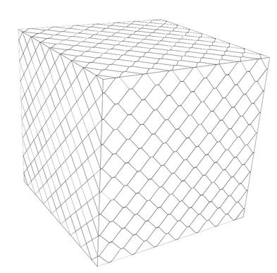

|  |
(Mesh) |
Mesh is a secure, lightweight grid middleware that is based on the addition of a single sign-on capability to the built-in public key authentication mechanism of SSH using system call interposition. Each Mesh installation is dedicated to serving a particular virtual organization (VO), which is defined to be a dynamic collection of individuals, institutions, and resources. Mesh allows individuals in one VO to execute SSH remote commands on Mesh-accessible resources within other cooperating VOs using a single Mesh SSH private key generated at the local VO. A full Mesh deployment consists of two dedicated hosts and three primary software components (besides SSH itself). The first host, called the Mesh Proxy (MP), is responsible for mediating all SSH remote commands that are to execute on Mesh-accessible resources within the VO. Users that attempt to bypass the MP and contact VO resources directly will be unable to utilize Mesh authentication, thus ensuring complete mediation.
Command mediation on the MP is carried out by a software component called the Mesh Authorization Shell (Mash). Mash is a highly flexible and customizable login shell replacement that parses remote commands and authorizes them against a site security policy. As part of the authorization process, commands can optionally be rewritten to force compliance with specific site policies or to provide enhanced usability. Authorized commands are passed on to the appropriate VO resource for execution using a second SSH remote command. VO resources are made Mesh-accessible by injecting a software component called the Mesh Interposition Agent (MIA) into the resource's SSH server using library preloading, which dynamically modifies its behavior during public key authentication. Instead of authenticating against the authorized_keys file stored locally in the user's home directory, the MIA causes the server to authenticate against an authorized_keys file retrieved at run-time from a second dedicated host within each VO called the Mesh Authentication Point (MAP). Single sign-on is achieved during key retrieval from the MAP and authentication to the MP. In Mesh, each individual is assumed to have a home VO, which is the VO with which they are most frequently associated (e.g. the institution for which they work). When a key is retrieved by the MIA from a MAP that is not the user's home MAP, the key retrieval is propagated to the home MAP. Likewise, when authenticating to an MP that is not the user's home MP, that MP will initiate a key retrieval from the home MP. Thus, a Mesh key generated at the home VO is valid at all VOs. Once the user has authenticated successfully on the Mesh-accessible resource, the MIA ignores the user's login shell and instead executes the remote command issued by the MP using a software component called the Mesh Exec Security Shell (Mess). Mess is a constrained execution shell that ignores metacharacters and only executes programs authorized by the administrator and not disallowed by the user. While the command is executing, it is subject to read, write, and execution controls enforced by the MIA. Once the command terminates, the SSH sessions will terminate as the final step. The authentication and authorization components of Mesh may be deployed independently, thus allowing VOs to choose between a full deployment, a deployment of only the single sign-on features without proxying or additional authorizations, or a deployment of only authorization components without single sign-on. Although originally intended for grid-like operations, organizations without an interest in grid computing can still deploy some or all of Mesh to take advantage of the additional security features it adds to stock SSH installations.Mesh is in active production at the NASA Advanced Supercomputing Facility (https://www.nas.nasa.gov/hecc/support/kb/entry/145) and has handled over 112M remote commands (as of May 2018) since stats started being collected in March 2009.